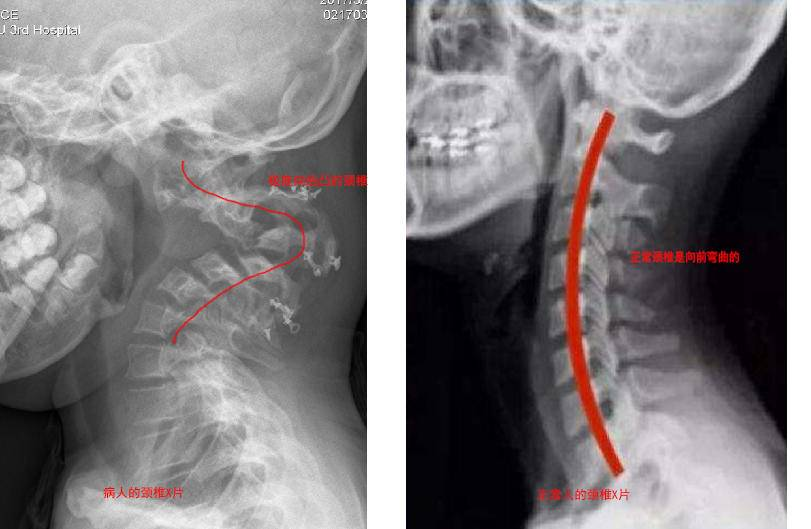
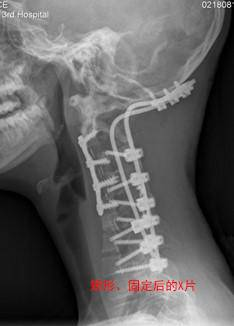

你好，欢迎来到《医学通识50讲》，我是薄世宁。
现代医疗服务要解决两个关键问题：
第一，医疗服务的质量。
第二，医疗服务的效率。
也就是说，如何让在单位时间内，把高质量的服务用在更多的病人身上。
为了解决这两个核心问题，在全世界都形成了以医院为中心的服务模式。
这节课只讨论一个问题：医院为什么可以成为医疗服务的中心？
高度分工协作
为了说明这个问题，我们从一个疑难病例讲起，这次你先来当医生。
病人是一个10岁男孩。脖子疼，两条腿没力气。
他的脖子撑不住脑袋的重量，所以只能低着头，上课必须用双手支着下巴才能看黑板。

正常颈椎是稍微向前方弯曲的，这是为了直立行走。但是，这个孩子的颈椎严重向后弯曲，这在医学上叫做严重的颈椎后凸畸形。
这样的畸形会带来大问题。
一方面，脖子支撑不住头的重量，头会把畸形弯曲的颈椎压得越来越弯，所以他抬不起头。
另一方面，畸形的颈椎会压迫颈部的脊髓、气管、食管、血管。现在是两条腿没劲儿，再进展四肢都可能瘫痪。
这个病诊断不难，怎么治呢？
你可能会说做手术。但是，手术的难度太大了。
普通的颈椎手术，对于一个骨科医生不算难。
但是这个病人曾经做过一次手术，再加上畸形，现在他的局部解剖结构乱了，手术风险也就增加了无数倍。
其次，这个手术的关键除了矫正畸形的弯曲，还要给颈椎打上固定架子，用外力辅助，这样才不会复发。
但是这个孩子骨发育不良，在这种畸形的椎体上打钉子，风险又增加了很多。
还有，这个手术要做到第一节和第二节椎体，也就是紧邻大脑的寰枢椎。稍有偏差病人就会高位截瘫或者死亡。
所以，找到能做这种手术的医生才是关键。
找谁呢？我相信很多骨科医生都会推荐孙宇。
孙宇是我们医院的骨科教授，主要研究疑难的颈椎畸形。每年他会做400例颈椎手术，其中有100例左右，都是疑难畸形。
病人来北京找到了孙宇，孙宇看过病例，说：“我给你做。”
孙宇的底气来自于他的个人技术，同样重要的，是他背后医院的整体实力。
对于这种疑难病例，能力再强的专家一个人也解决不了全部问题。
手术前，孙宇找到了全部相关科室的医生会诊。
我们把这种工作模式叫做疑难病例的多学科会诊制度，也就是所有相关科室的人聚在一起讨论问题。
骨科要制定手术方案矫正这个畸形，同时还要为这个孩子发育不良的脊柱准备特殊的手术器械；麻醉科要考虑怎么给这个孩子做麻醉；呼吸科要分析通气问题。
对于10岁的孩子，还要考虑到手术后的药物和营养供给，就需要营养科、儿科、药剂科来解决。
我所在的ICU，要保证手术后的安全，准备好处理各种意外情况。
所以，到医院看病，你看到的是分工，我看到的是协作；你看到的是单点，我看到的是网络；你看到的是某一个专家，我看到的是整个医院平台。
在多个学科的共同参与下，这个孩子终于完成了手术。
这个手术能顺利完成，有一项前沿技术——手术导航，起了大作用。
以前，做手术的时候总有医生看不到的部位。所以，无论医生经验多么丰富，也有误伤神经血管的可能。
尤其是对于这个孩子，他的局部解剖结构已经乱了，而且椎体畸形，手术风险可想而知。
手术导航相当于在手术器械上加了一个GPS，钉子打到哪儿了，刀切到什么部位了，都可以在屏幕上实时地显示出来。这种技术让这台手术更快速、精确、安全。
正因为高度分工，才让每个领域的研究越来越深入，带来最前沿的成果。医院又用协作形成了网络，才能够治疗疑难病和复杂病。
今天，不仅是医院内部，医院和医院之间也在逐步形成分工协作的网络。
比如，咱们国家正在推行的分级诊疗，本质就是分工协作。
乡镇卫生院、社区服务中心保障基础的医疗保健，慢病管理、健康教育可以完成疾病的首诊。
大医院和专科医院对于疑难病、复杂病、急性病有能力有经验。
大医院和基层医院相互转诊，急性病在大医院得到有效治疗后，还可以转到基层医院继续康复。
这就是基层首诊、双向转诊、急慢分治、上下联动。
只有在医院这个平台上，有了分工和协作的基础，才让医生的技术实现单点突破。
这些优势技术协作起来，才可能为病人提供高质量的服务。
医院和医院之间的分工协作，不仅保证了质量，还能让资源得以充分利用。
能量高效利用
从分工协作这个角度，能最直观地理解医院的运行。接下来，我换个角度再带你认识医院。
先请你想一个问题：以前都是医生上门去给病人看病，为什么现在却是病人去医院呢？
先说医生。
孙宇教授专门的研究方向是疑难颈椎手术，那么他上门去给病人看病和各地的疑难病人都过来找他，哪个效率更高？
当然是到医院了。
假如现在你是管理者，有孙宇这样一个高水平的医生，你怎么让他充分发挥价值呢？
就拿我们医院来说，日门诊量是1.5万人左右，每年就要为大约500万病人解决就医问题。
只有医院这种形式，才能让孙宇教授的能量和最需要这种手术技术的病人匹配，达到最高效的利用。
再说设备。
检验科、放射科、手术室等等这些辅助科室具有大量的医疗设备。统筹利用，又让这些设备的能量和病人高效匹配。
医院为医生赋能。不同专业医生的能量汇聚起来，又推动医院的发展。
所以，医院这个平台让医生、设备、技术的能量，最高效地匹配和利用。
信息高效流动
说完能量，咱们再说说信息。
吴军老师说过：
同样，医院这种形式让信息能够高效流动和利用。
在医院，每个医生都是自己研究领域信息的拥有者。信息产生大量的前沿知识，但是，怎么让这些信息迅速扩散到所有的医疗服务现场呢？
首先，信息的沟通和流动才会带来更新，不断更新才可能带来前沿信息。
咱们说的这台复杂手术，不仅孙宇，全部参与治疗、会诊、手术的医生和护士，都获得了不同领域的信息。
他们又把自己领域最前沿的信息集中到这个病人的治疗上，这些就成了治疗复杂疾病的最佳信息。
其次，我们说的“见识”，就是先有“见”，才有“识”。
见过大量的病例，才能积累大量的经验和教训，“我见过”是“我可以”的底气。
在医院，每天有大量病人就诊、治疗，这是医生重要的信息来源，甚至超过了书本上的信息。
病人为医生积累信息和经验提供了重要来源。
说回刚才的病例，这种严重的颈椎后凸畸形并不多见。以前，医生掌握的信息量很少。
但是在医院这个平台上，在不同医院组成的网络体系里，“孙宇对这种疑难手术有经验”这个关键信息，在医院内会传递给所有医生。还会通过医院网络、医院之间的学术交流、相互转诊，传递给其他医院和其他医生。
那么，这种疾病的治疗必然会越来越成熟。
但是，这些关键的信息最怕什么呢？怕丢失，怕有偏差。
所以，医院又用专业化的传承体系，避免了信息偏差或者丢失。
比如，带教体系、专家查房、教授会诊、多学科会诊，这让年轻医生可以不断地学习。同时，不同的医生查房、会诊讨论，也避免了个人信息偏倚。
再比如，医院用病案系统管理每个病人的信息，这些信息存储下来永远不会丢失，可以一代一代传承下去。
医生们通过写病历汇总关于这个疾病诊断和治疗的信息，新医生学习老病例又学习了前辈的经验。
信息经过不断传递、更新、迭代，才形成今天的医疗知识体系。在医院这个平台上，信息得到了最高效的利用和传递。
所以，即便你拥有私人医生对你提供日常的健康建议，有了牙病、眼病或者其他小毛病，你还可以去诊所。
但是，只要是大问题，最终解决还需要依赖医院。
医院这种组织形式，无论是从分工协作，能量匹配和利用，还是信息流动和传承各个层面，都让医疗服务的质量和效率做到最高。
你肯定还关心那个颈椎畸形孩子的治疗效果。
这个孩子前后经历了大大小小4次手术，最后顺利出院了。

下节预告
下节课，我们讲讲保障了最大多数人利益的举措——公共卫生制度。